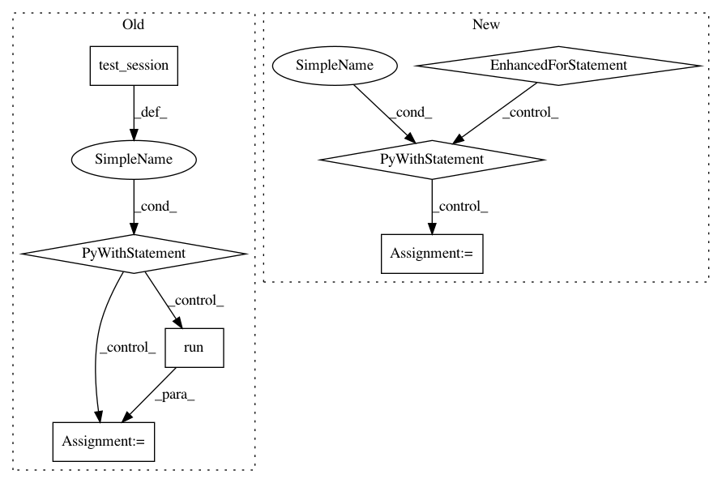

4f14cb629462c9e685ea92a961a80a8c5dcda83a,object_detection/meta_architectures/ssd_meta_arch_test.py,SsdMetaArchTest,test_predict_results_have_correct_keys_and_shapes,#SsdMetaArchTest#,119
Before Change
expected_class_predictions_with_background_shape_out = (
batch_size, self._num_anchors, self._num_classes+1)
init_op = tf.global_variables_initializer()
with self.test_session() as sess:
sess.run(init_op)
prediction_out = sess.run(prediction_dict)
self.assertAllEqual(prediction_out["box_encodings"].shape,
expected_box_encodings_shape_out)
self.assertAllEqual(
prediction_out["class_predictions_with_background"].shape,
expected_class_predictions_with_background_shape_out)
def test_postprocess_results_are_correct(self):
batch_size = 2
preprocessed_input = tf.random_uniform((batch_size, 2, 2, 3),
dtype=tf.float32)
After Change
expected_class_predictions_with_background_shape_out = (
batch_size, self._num_anchors, self._num_classes+1)
for input_shape in input_shapes:
tf_graph = tf.Graph()
with tf_graph.as_default():
preprocessed_input_placeholder = tf.placeholder(tf.float32,
shape=input_shape)
prediction_dict = self._model.predict(preprocessed_input_placeholder)
self.assertTrue("box_encodings" in prediction_dict)
self.assertTrue("class_predictions_with_background" in prediction_dict)
self.assertTrue("feature_maps" in prediction_dict)
init_op = tf.global_variables_initializer()
with self.test_session(graph=tf_graph) as sess:
sess.run(init_op)
prediction_out = sess.run(prediction_dict,
feed_dict={
preprocessed_input_placeholder:
np.random.uniform(
size=(batch_size, 2, 2, 3))})
self.assertAllEqual(prediction_out["box_encodings"].shape,
expected_box_encodings_shape_out)
self.assertAllEqual(
prediction_out["class_predictions_with_background"].shape,
expected_class_predictions_with_background_shape_out)
def test_postprocess_results_are_correct(self):
batch_size = 2
image_size = 2
input_shapes = [(batch_size, image_size, image_size, 3),
In pattern: SUPERPATTERN
Frequency: 4
Non-data size: 7
Instances
Project Name: tensorflow/models
Commit Name: 4f14cb629462c9e685ea92a961a80a8c5dcda83a
Time: 2017-07-18
Author: derekjchow@gmail.com
File Name: object_detection/meta_architectures/ssd_meta_arch_test.py
Class Name: SsdMetaArchTest
Method Name: test_predict_results_have_correct_keys_and_shapes
Project Name: horovod/horovod
Commit Name: 65bb3580e5cdd9adee17b5f80fba949550931271
Time: 2019-01-09
Author: 38317191+kuroko1t@users.noreply.github.com
File Name: test/test_tensorflow.py
Class Name: MPITests
Method Name: test_horovod_broadcast_grad
Project Name: tensorflow/models
Commit Name: 4f14cb629462c9e685ea92a961a80a8c5dcda83a
Time: 2017-07-18
Author: derekjchow@gmail.com
File Name: object_detection/meta_architectures/ssd_meta_arch_test.py
Class Name: SsdMetaArchTest
Method Name: test_postprocess_results_are_correct
Project Name: horovod/horovod
Commit Name: 65bb3580e5cdd9adee17b5f80fba949550931271
Time: 2019-01-09
Author: 38317191+kuroko1t@users.noreply.github.com
File Name: test/test_tensorflow.py
Class Name: MPITests
Method Name: test_horovod_allreduce_grad